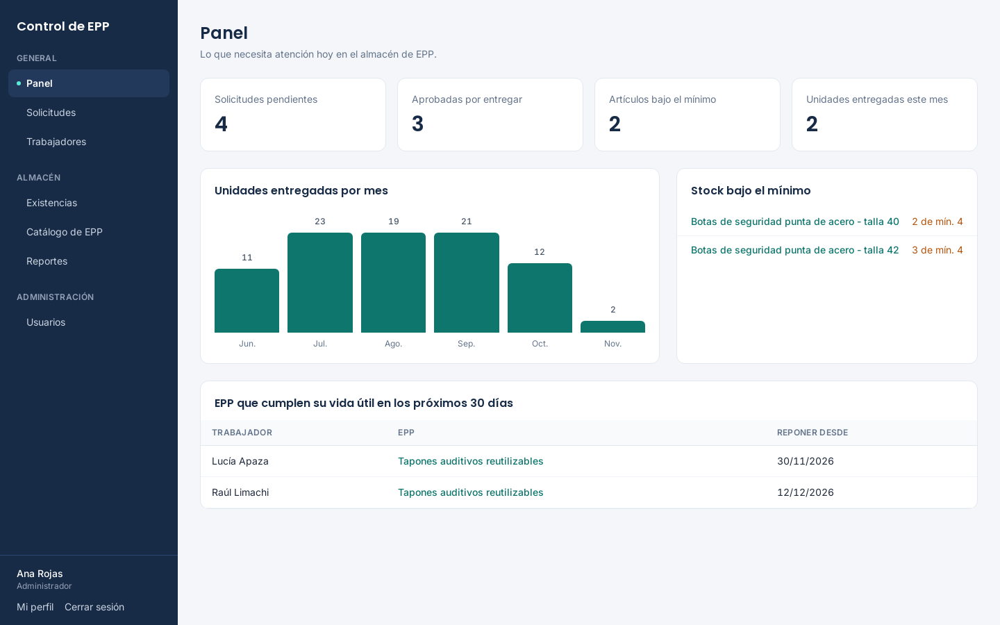

Control de EPP
- Laravel 13
- React
- TypeScript
- MariaDB
- Docker
- Solicitudes con aprobación: aprobar reserva el stock y cancelar lo devuelve.
- Stock por talla con kárdex; nunca queda negativo.
- Entrega con acta PDF y fecha de reposición según la vida útil.
- 29 pruebas automatizadas.